Genomic features of the breakpoints
Charlotte West
Charles Plessy
25 January, 2022
Source:vignettes/GenomicFeatures.Rmd
GenomicFeatures.Rmd
knitr::opts_chunk$set(cache = TRUE, cache.lazy = FALSE)
knitr::opts_knit$set(verbose = TRUE)Load packages and data
See ?OikScrambling:::loadAllGenomes, ?OikScrambling:::loadAllTranscriptsGR, and vignette("LoadGenomicBreaks", package = "OikScrambling") for how the different objects are prepared.
library('OikScrambling') |> suppressPackageStartupMessages()
library('GenomicFeatures') |> suppressPackageStartupMessages()
library('heatmaps') |> suppressPackageStartupMessages()
genomes <- OikScrambling:::loadAllGenomes()
transcripts <- OikScrambling:::loadAllTranscriptsGR() |> suppressWarnings()
annots <- OikScrambling:::loadAllAnnotations() |> suppressWarnings()
reps <- OikScrambling:::loadAllRepeats()
load("BreakPoints.Rdata")
requireNamespace("rGADEM") |> suppressPackageStartupMessages()
requireNamespace("ggseqlogo") |> suppressPackageStartupMessages()Nucleic acid content heatmaps
The GenomicBreaks::bp_heatmap() function plots nucleic acid content in windows centered on alignment stops.
GC
Lets look at GC content before and after coalescing:
#hm_GC1 <- sapply(gbs, bp_heatmap, basep_range = 1000, pat = "GC", direction = "left") |> SimpleList()
hm_GC2 <- sapply(coa[1:15], bp_heatmap, basep_range = 1000, pat = "GC", direction = "left") |> SimpleList()
#hm_GC3 <- sapply(coa2, bp_heatmap, basep_range = 1000, pat = "GC", direction = "left") |> SimpleList()
maxHeight <- 2000
#sm_GC1 <- sapply(hm_GC1, smoothHeatmap, output.size = c(maxHeight, 500), algorithm = "kernel") |> SimpleList()
sm_GC2 <- sapply(hm_GC2, smoothHeatmap, output.size = c(maxHeight, 500), algorithm = "kernel") |> SimpleList()
#sm_GC3 <- sapply(hm_GC3, smoothHeatmap, output.size = c(maxHeight, 500), algorithm = "kernel") |> SimpleList()
#plotHeatmapList(sm_GC1[1:5])
plotHeatmapList(sm_GC2[1:5])
#plotHeatmapList(sm_GC2[6:10])
#plotHeatmapList(sm_GC2[11:15])
#plotHeatmapList(sm_GC3[1:5])The alignment stops are ordered in such a way that start (or left breaks) are centred on the top half of the plot, and end alignment stops are centred on the bottom. This is why we see different directionality in the plots. At the alignment stops, the GC content seems to be lower, but higher once within the aligned region, except for the Oki – Kum pair.
TATA
Now looking at TATA content:
#hm_GC1_TATA <- sapply(gbs, bp_heatmap, basep_range = 1000, pat = "TATA", direction = "left") |> SimpleList()
hm_GC2_TATA <- sapply(coa[1:15], bp_heatmap, basep_range = 1000, pat = "TATA", direction = "left") |> SimpleList()
maxHeight <- 2000
#sm_GC1_TATA <- sapply(hm_GC1_TATA, smoothHeatmap, output.size = c(maxHeight, 500), algorithm = "kernel") |> SimpleList()
sm_GC2_TATA <- sapply(hm_GC2_TATA, smoothHeatmap, output.size = c(maxHeight, 500), algorithm = "kernel") |> SimpleList()
#sm_GC3_TATA <- sapply(hm_GC3_TATA, smoothHeatmap, output.size = c(maxHeight, 500), algorithm = "kernel") |> SimpleList()
#plotHeatmapList(sm_GC1_TATA)
plotHeatmapList(sm_GC2_TATA[1:5])
#plotHeatmapList(sm_GC3_TATA)The directionaility here is consistent with the GC content analysis. Furthermore; “TATA box sequence can act as a basal promoter element not only for RNA polymerase II (RNAP II) transcription, but also for transcription by RNA polymerase III (RNAP III)” - Wang Y, Jensen RC, Stumph WE. Role of TATA box sequence and orientation in determining RNA polymerase II/III transcription specificity. Nucleic Acids Res. 1996;24(15):3100–3106. doi:10.1093/nar/24.15.3100. However, the areas are not particularly enriched for TATA boxes, so it does not necessarily show that breakpoints are occurring directly after promoter regions.
#hm_GC1_mot <- sapply(gbs, bp_heatmap, basep_range = 1000, pat = "AGCNGC", direction = "left") |> SimpleList()
hm_GC2_mot <- sapply(coa[1:15], bp_heatmap, basep_range = 1000, pat = "AGCNGC", direction = "left") |> SimpleList()
maxHeight <- 2000
#sm_GC1_mot <- sapply(hm_GC1_mot, smoothHeatmap, output.size = c(maxHeight, 500), algorithm = "kernel") |> SimpleList()
sm_GC2_mot <- sapply(hm_GC2_mot, smoothHeatmap, output.size = c(maxHeight, 500), algorithm = "kernel") |> SimpleList()
#sm_GC3_mot <- sapply(hm_GC3_mot, smoothHeatmap, output.size = c(maxHeight, 500), algorithm = "kernel") |> SimpleList()
#plotHeatmapList(sm_GC1_mot)
plotHeatmapList(sm_GC2_mot[1:5])
#plotHeatmapList(sm_GC3_mot)Cluster analysis
# # Accessory functions
# clusterHeatmap <- function(hm, k = 2) kmeans(image(hm), k)
#
# orderHeatmap <- function(hm, cl) {
# image(hm) <- image(hm)[order(cl$cluster),]
# hm
# }
#
# subsetHeatmap <- function(hm, bool) {
# image(hm) <- image(hm)[bool,]
# hm
# }
#
# # DAta
# hm_GC <- bp_heatmap( gr_Oki_O, basep_range = 1000, pat = "GC", direction = "left")
# hm_TATA <- bp_heatmap( gr_Oki_O, basep_range = 1000, pat = "TATA", direction = "left")
# hm_tan <- feature_coverage(gr_Oki_O, tan_Oki, win = 1000, lab = "Tandem", direction = "left")
#
# # Define 3 K-mean clusters
# clusterHeatmap(hm_GC, 3) -> hm_cl_k4
#
# # Order and smooth
# shm_GC <- orderHeatmap(hm_GC, hm_cl_k4) %>%
# smoothHeatmap(output.size = c(2000,500), algorithm = "kernel")
#
# shm_TATA <- orderHeatmap(hm_TATA, hm_cl_k4) %>%
# smoothHeatmap(output.size = c(2000,500), algorithm = "kernel")
#
# shm_tan <- orderHeatmap(hm_tan, hm_cl_k4) %>%
# smoothHeatmap(output.size = c(2000,500), algorithm = "kernel")
#
# # Plot the ordered data
# plotHeatmapList(list(shm_GC, shm_TATA, shm_tan))
# par(mfrow = c(1,1)) # plotHeatmapList messes with mrfrow...
# plotHeatmapMeta(list(hm_GC, hm_TATA, hm_tan))
#
# plotHeatmapMeta(list(subsetHeatmap(hm_GC, hm_cl_k4$cluster == 1),
# subsetHeatmap(hm_GC, hm_cl_k4$cluster == 2),
# subsetHeatmap(hm_GC, hm_cl_k4$cluster == 3)))
#
# kmeanOrderedPlot <- function (hm, k=3, seed = 1) {
# set.seed(seed)
#
# cl <- kmeans(image(hm), k)
# mat <- image(hm)[order(cl$cluster),]
#
# kmhm = Heatmap(
# mat,
# coords=c(-500,500),
# label="kmeans",
# scale=range(mat))
#
# plotHeatmapList(kmhm,
# cex.label=1.5,
# partition=as.vector(table(cl$cluster)),
# partition.legend=TRUE,
# partition.lines=TRUE,
# legend=TRUE,
# legend.pos="r",
# legend.width=0.3)
# }
#
# kmeanOrderedPlot(shm_GC)Evidence for breakpoint hotspots
The function ?GenomicBreaks::bp_pair_analysis takes two pairwise alignments with the same target genome, and plots the alignment stops on to the centred alignment stops of the other.
In the plot below, Osaka is there consistent target genome, and as such acts as a coordinate system to relate alignment stops across genomes. Lets produce two of these 3-way analyses; one between Osaka-Okinawa-Norway, and one between Osaka-Okinawa-Aomori.
bp_pair_analysis(gr_ref_q1 = gbs$Osa_Oki, gr_ref_q2 = gbs$Osa_Nor, win = 1000, lab = "Oki~Nor") |> plotHeatmapMeta()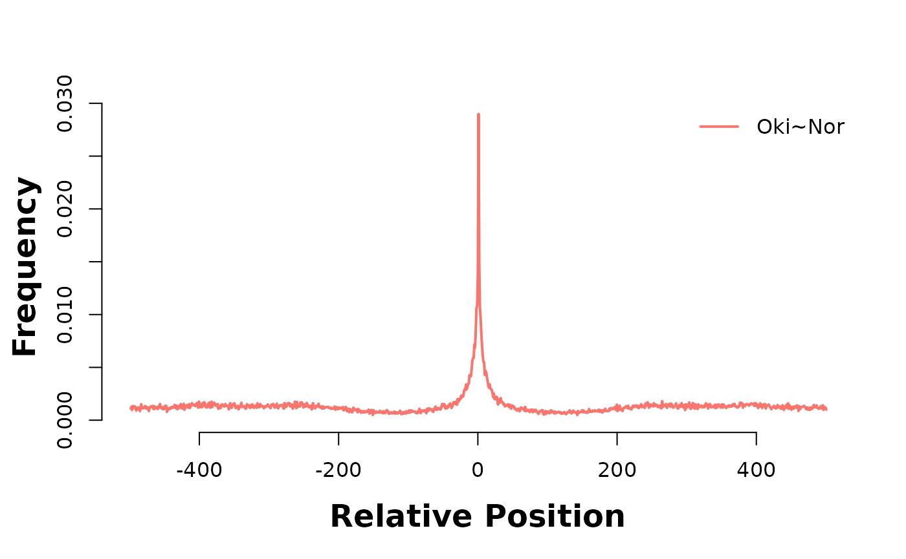
bp_pair_analysis(gr_ref_q1 = gbs$Osa_Oki, gr_ref_q2 = gbs$Osa_Aom, win = 1000, lab = "Oki~Aom") |> plotHeatmapMeta()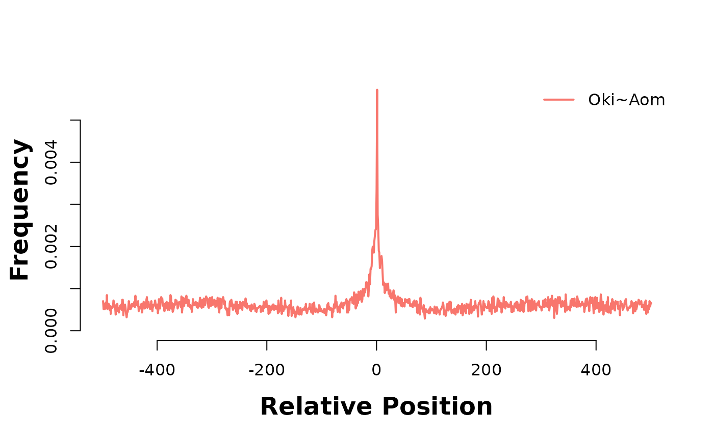
The accumulation of alignment breaks of one pairwise alignment onto another suggests the existence of breakpoint hotspots; regions where breaks are far more likely to occur. Intuitively, this would lead to the presumption of synteny blocks, also. The pattern is consistent after coalescing, too;
bp_pair_analysis(gr_ref_q1 = coa$Osa_Oki, gr_ref_q2 = coa$Osa_Nor, win = 1000, lab = "Oki~Nor") |> plotHeatmapMeta()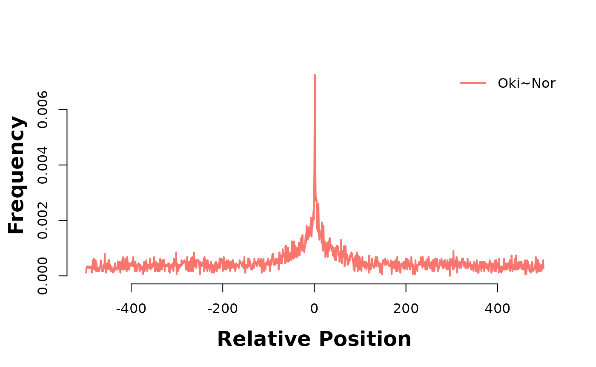
bp_pair_analysis(gr_ref_q1 = coa$Osa_Oki, gr_ref_q2 = coa$Osa_Aom, win = 1000, lab = "Oki~Aom") |> plotHeatmapMeta()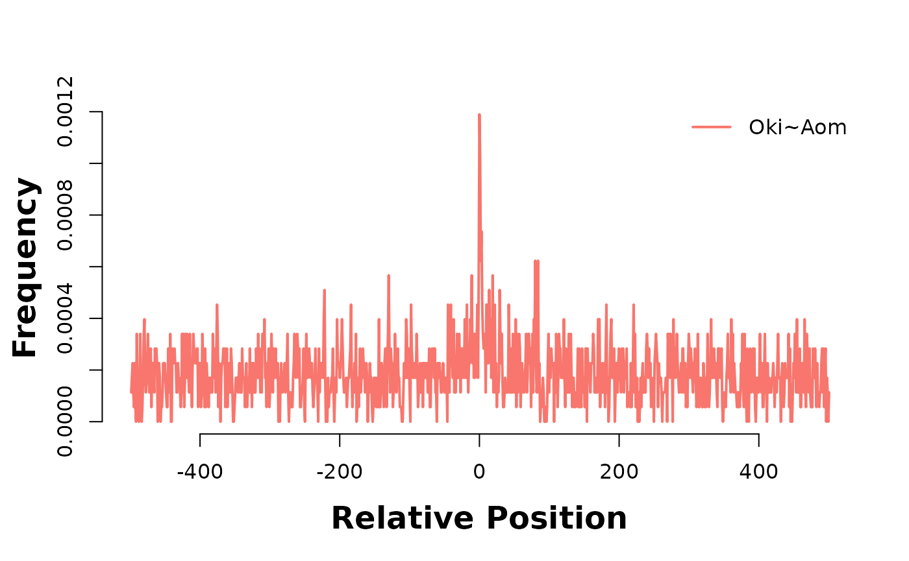
Gene feature coverage around alignment stops (breakpoints)
Breakpoints are between mapped regions. If the unmapped region is broad we have little information where the breakpoint originally was. We set arbitrarly the breakpoints to the left-side (end-side) coordinate of mapped regions.
Mapped regions can consist of multiple colinear aligned regions, or be a single uncoalesced aligned region. We will see that they have different properties.
The function feature_coverage will plot the coverage of tandem repeats around centred alignment stops.
current_GB <- coa$Oki_Osa
hmList_OKI <- list()
hmList_OKI$genes <- feature_coverage(current_GB, genes(annots$Oki), win = 2000, lab = "Oki genes", direction = "left")
hmList_OKI$promoters <- feature_coverage(current_GB, promoters(annots$Oki), win = 2000, lab = "Oki promoters", direction = "left")## Warning in valid.GenomicRanges.seqinfo(x, suggest.trim = TRUE): GRanges object contains 4 out-of-bound ranges located on sequences
## chr1, chrUn_1, and chrUn_10. Note that ranges located on a sequence
## whose length is unknown (NA) or on a circular sequence are not
## considered out-of-bound (use seqlengths() and isCircular() to get the
## lengths and circularity flags of the underlying sequences). You can use
## trim() to trim these ranges. See ?`trim,GenomicRanges-method` for more
## information.
hmList_OKI$exons <- feature_coverage(current_GB, exonicParts(annots$Oki), win = 2000, lab = "Oki exons", direction = "left")
hmList_OKI$introns <- feature_coverage(current_GB, intronicParts(annots$Oki), win = 2000, lab = "Oki introns", direction = "left")
hmList_OKI$cds <- feature_coverage(current_GB, cds(annots$Oki), win = 2000, lab = "Oki cds", direction = "left")
plotHeatmapMeta(hmList_OKI[c("genes", "exons", "cds")]) # Show they look alike. We keep "exons"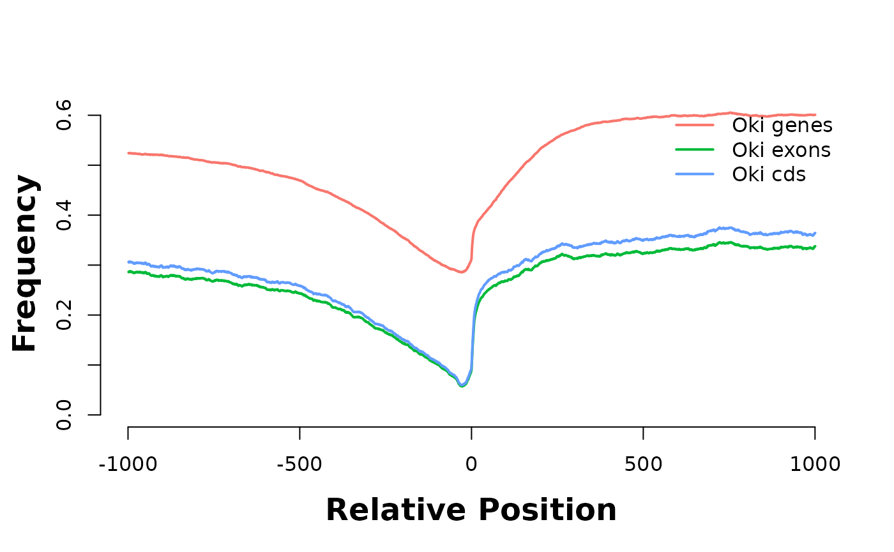
The features genes, exons and cds have comparable profiles. Let’s keep only exons in the rest of the analysis.
plotHeatmapMeta(hmList_OKI[c("promoters", "exons", "introns")])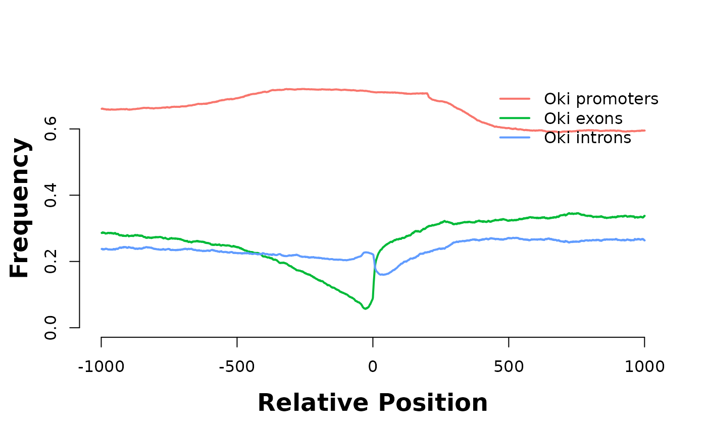
Positive coordinates start in aligned regions and negative coordinates start in unaligned regions. As we move further from 0, we can not guarantee that the statement is still true because some regions have a width narrower than the plot window. This is why the values tend to equilibrate near the boundaries.
Aligned regions are enriched in exons and depleted in introns.
Breakpoints of wide and narrow regions
Most of the narrow-width aligned regions did not coalesce. We use this as a classifier instead of an arbitrary width cutoff. See vignette("RegionWidths", package = "OikScrambling") for details.
Coding sequences
Close to the breakpoint of uncoalesced mapped regions, exon annotations are depleted, which makes sense, as exons are usually mapable. Within the mapped regions, frequency of introns and exons are comparable. In contrary, within coalesced mapped regions, the exon annotations are over-represented.
prepareFreqPlot <- function(gb, annot, rep, win = 1e3) {
l <- list()
l$genes <- feature_coverage(gb, genes(annot), win = win, lab = "genes", direction = "left")
#l$cds <- feature_coverage(gb, cds(annot), win = win, lab = "CDS", direction = "left")
l$intron <- feature_coverage(gb, intronicParts(annot), win = win, lab = "intron", direction = "left")
l$exon <- feature_coverage(gb, exonicParts(annot), win = win, lab = "exon", direction = "left")
l$reps <- feature_coverage(gb, rep, win = win, lab = "repeats",direction = "left")
#reorder
newOrder <- order(rowSums(l$intron@image))
l$intron@image <- l$intron@image[newOrder,]
l$exon@image <- l$exon@image[newOrder,]
l
}
prepareGGFreqPlot <- function(x, desc = NULL) {
l <- lapply(names(x), \(name){
val <- colSums(x[[name]]@image)
what <- name
tibble::tibble(val, freq = val / nrow(x[[name]]@image), what, pos = 1:length(val) - round(length(val)) / 2, desc)
})
do.call(rbind, l)
}Synteny as a proxy for aligned region width.
current_GB_wide <- coa$Oki_Osa[ ! coa$Oki_Osa$nonCoa] |> plyranges::arrange(width)
current_GB_narrow <- coa$Oki_Osa[ coa$Oki_Osa$nonCoa]
current_GB_unmap <- unmap$Oki_Osa
current_GB_unalMap <- unalMap$Oki_Osa
current_GB_wide |> width() |> summary()## Min. 1st Qu. Median Mean 3rd Qu. Max.
## 224 2170 4635 9901 11230 164824## Min. 1st Qu. Median Mean 3rd Qu. Max.
## 61.0 195.0 345.5 821.1 888.8 24353.0## Min. 1st Qu. Median Mean 3rd Qu. Max.
## 1 167 475 1994 1543 211398## Min. 1st Qu. Median Mean 3rd Qu. Max.
## 2.0 77.0 286.0 575.5 561.0 47971.0
hmListWide <- prepareFreqPlot(current_GB_wide, annots$Oki, reps$Oki)
hmListNarrow <- prepareFreqPlot(current_GB_narrow, annots$Oki, reps$Oki)
hmListUnmap <- prepareFreqPlot(current_GB_unmap, annots$Oki, reps$Oki)
hmListUnalMap <- prepareFreqPlot(current_GB_unalMap, annots$Oki, reps $Oki)
rbind(
hmListNarrow |> prepareGGFreqPlot("01_narrow"),
hmListUnmap |> prepareGGFreqPlot("02_unmap"),
hmListWide |> prepareGGFreqPlot("03_wide"),
hmListUnalMap |> prepareGGFreqPlot("04_unalMap")
)|> ggplot() +
aes(pos, freq, col = what) +
geom_line() +
facet_wrap(~desc, nrow = 1)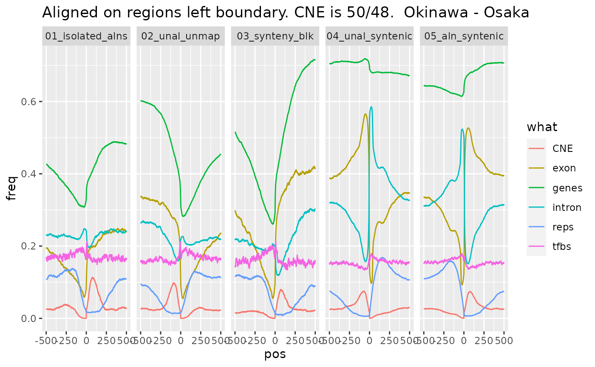
Linked regions
Same approach, but enforcing a succession of just-aligned, unaligned and syntenic regions.
flag_aln_unal_syn <- function (x) {
p0 <- x$type
p1 <- c(tail(p0, -1), factor('aligned'))
p2 <- c(tail(p0, -2), factor('aligned'), factor('aligned'))
p0 == 'aligned' & p1 == 'unaligned' & p2 == 'syntenic'
}
current_GB <- wgo$Oki_Osa
current_GB$flag_a_u_s <- flag_aln_unal_syn(current_GB)
current_GB_aln <- current_GB[which(current_GB$flag_a_u_s) + 0]
current_GB_unal <- current_GB[which(current_GB$flag_a_u_s) + 1]
current_GB_syn <- current_GB[which(current_GB$flag_a_u_s) + 2]
current_GB_aln |> width() |> summary()## Min. 1st Qu. Median Mean 3rd Qu. Max.
## 69 218 440 1029 1183 24353## Min. 1st Qu. Median Mean 3rd Qu. Max.
## 3 167 508 1980 1659 95225## Min. 1st Qu. Median Mean 3rd Qu. Max.
## 224 2004 4410 9189 10524 120337
hmListAln <- prepareFreqPlot(current_GB_aln, annots$Oki, reps$Oki)
hmListUnal <- prepareFreqPlot(current_GB_unal, annots$Oki, reps$Oki)
hmListSyn <- prepareFreqPlot(current_GB_syn, annots$Oki, reps$Oki)
rbind(
hmListAln |> prepareGGFreqPlot("01_narrow"),
hmListUnal |> prepareGGFreqPlot("02_unal"),
hmListSyn |> prepareGGFreqPlot("03_syn")
)|> ggplot() +
aes(pos, freq, col = what) +
geom_line() +
facet_wrap(~desc, nrow = 1)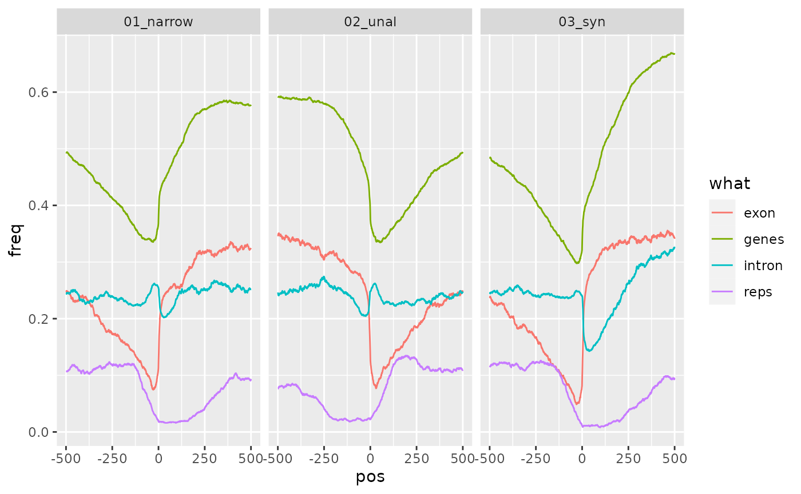
This mildens the differences observed in the earlier section, probably because it requires the aligned region to be nearby a syntenic region.
Aligning on center instead of border.
As the plots are hardcoded to use the left border, let’s artificially make regions of 1 bp on centers, rather than changing the accessory function.
current_GB_wide_c <- current_GB_wide |> plyranges::anchor_center() |> plyranges::mutate(width=1)
current_GB_narrow_c <- current_GB_narrow |> plyranges::anchor_center() |> plyranges::mutate(width=1)
current_GB_unmap_c <- current_GB_unmap |> plyranges::anchor_center() |> plyranges::mutate(width=1)
current_GB_unalMap_c <- current_GB_unalMap |> plyranges::anchor_center() |> plyranges::mutate(width=1)
hmListWide_c <- prepareFreqPlot(current_GB_wide_c, annots$Oki, reps$Oki)
hmListNarrow_c <- prepareFreqPlot(current_GB_narrow_c, annots$Oki, reps$Oki)
hmListUnmap_c <- prepareFreqPlot(current_GB_unmap_c, annots$Oki, reps$Oki)
hmListUnalMap_c <- prepareFreqPlot(current_GB_unalMap_c, annots$Oki, reps$Oki)
rbind(
hmListNarrow_c |> prepareGGFreqPlot("01_narrow"),
hmListUnmap_c |> prepareGGFreqPlot("02_unmap"),
hmListWide_c |> prepareGGFreqPlot("03_wide"),
hmListUnalMap_c |> prepareGGFreqPlot("04_unalMap")
)|> ggplot() +
aes(pos, freq, col = what) +
geom_line() +
facet_wrap(~desc, nrow = 1)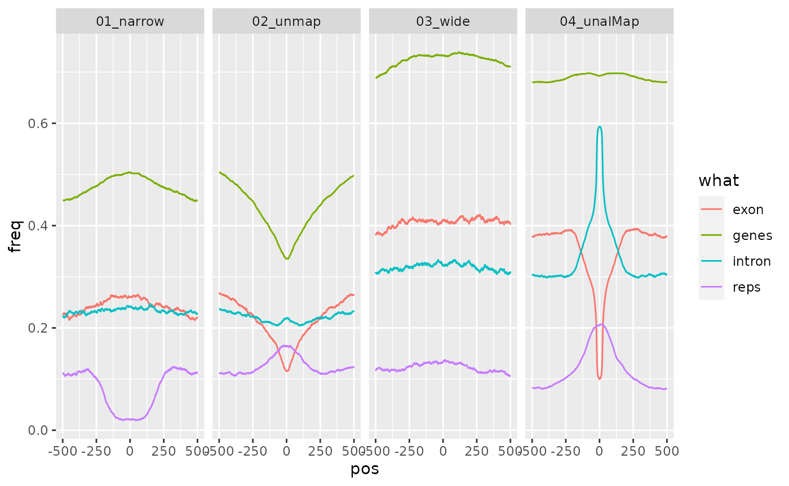
PWM
The PWM motif, which is rare in comparison to the other features, follows a profile that bears resemblance to the repeat profile.
gadems.invLeftGap <- readRDS("gadems.invLeftGap.Rda")
pwm <- gadems.invLeftGap$Oki_Osa[[1]]
pwm@consensus## [1] "rArAAGCCGCdwAGCsGCw"
# pwmHits <- matchPWM(pwm = sapply(pwm@alignList, \(x) x@seq) |> as("DNAStringSet") |> PWM(), genomes$Oki) # Gives different scores...
pwmHits <- matchPWM(pwm = rGADEM::getPWM(pwm), genomes$Oki) |> suppressWarnings()
# Suppressing warnings like:
# Warning messages:
# 1: In .Call2("XString_match_PWM", pwm, subject, min.score, count.only, :
# 'subject' contains letters not in [ACGT] ==> assigned weight 0 to them
plotHeatmapMeta(list(feature_coverage(current_GB_wide, pwmHits, win = 1e3, lab = "wide", direction = "left")))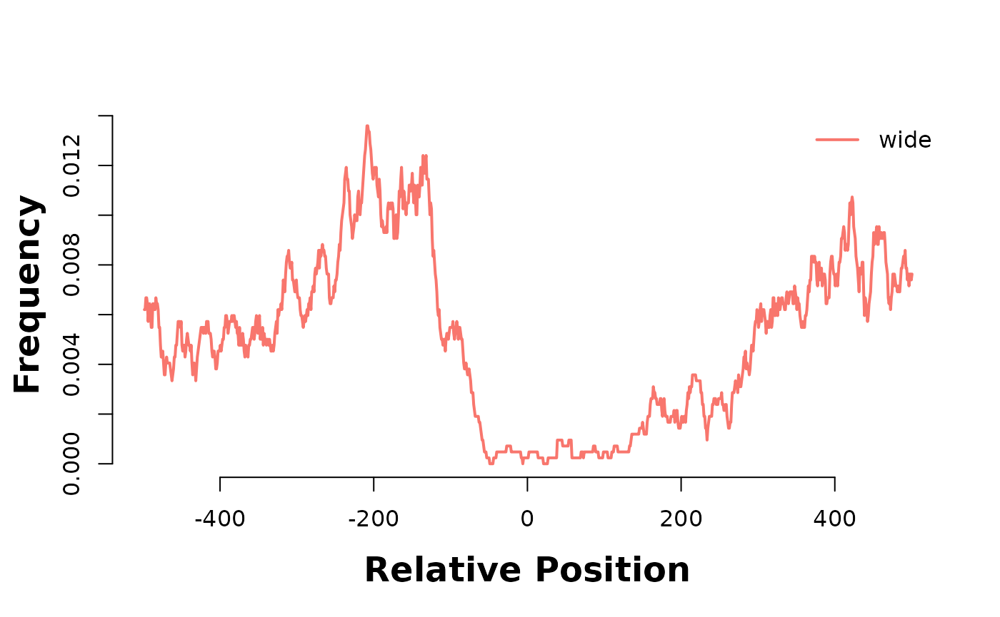
plotHeatmapMeta(list(feature_coverage(current_GB_narrow, pwmHits, win = 1e3, lab = "narrow", direction = "left")))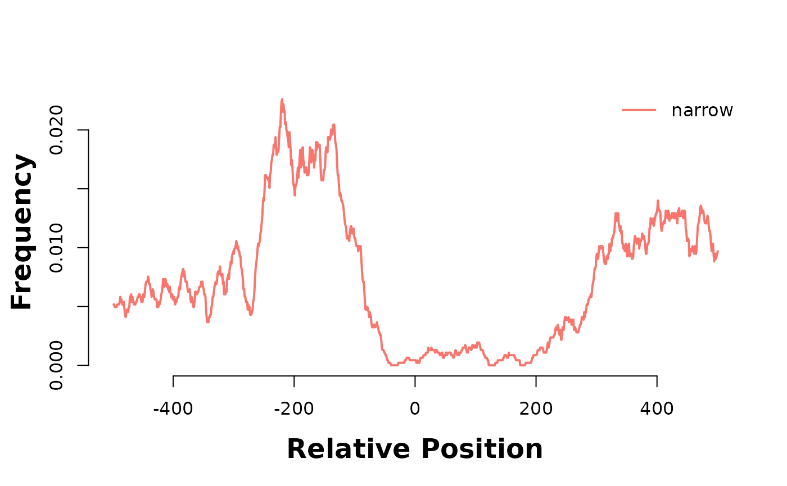
Question
in vignette("ColinearityInterruptors", package = "OikScrambling"), we saw that some uncoalesced regions map uniquely and are well conserved across genomes. What are they… enhancers ?
Gene feature coverage around PWM hits
Let’s look at coverage around PWM hits of the AAGCsGCwwmkCGrCTTyn motif
current_GB <- pwmHits
hmList_PWM_OKI <- list()
hmList_PWM_OKI$genes <- feature_coverage(current_GB, genes(annots$Oki), win = 2000, lab = "Oki genes", direction = "left")
hmList_PWM_OKI$promoters <- feature_coverage(current_GB, promoters(annots$Oki), win = 2000, lab = "Oki promoters", direction = "left")## Warning in valid.GenomicRanges.seqinfo(x, suggest.trim = TRUE): GRanges object contains 4 out-of-bound ranges located on sequences
## chr1, chrUn_1, and chrUn_10. Note that ranges located on a sequence
## whose length is unknown (NA) or on a circular sequence are not
## considered out-of-bound (use seqlengths() and isCircular() to get the
## lengths and circularity flags of the underlying sequences). You can use
## trim() to trim these ranges. See ?`trim,GenomicRanges-method` for more
## information.
hmList_PWM_OKI$exons <- feature_coverage(current_GB, exonicParts(annots$Oki), win = 2000, lab = "Oki exons", direction = "left")
hmList_PWM_OKI$introns <- feature_coverage(current_GB, intronicParts(annots$Oki), win = 2000, lab = "Oki introns", direction = "left")
hmList_PWM_OKI$cds <- feature_coverage(current_GB, cds(annots$Oki), win = 2000, lab = "Oki cds", direction = "left")
plotHeatmapMeta(hmList_PWM_OKI[c("genes", "exons", "cds")]) # Show they look alike. We keep "exons"
plotHeatmapMeta(hmList_PWM_OKI[c("promoters", "exons", "introns")])
They are enriched in introns…
#
# # Sandbox to make sanity checks.
#
# a <- coa$Oki_Osa
# b <- unlist(fiveUTRsByTranscript(annots$Oki))
#
# hm_a <- feature_coverage(a, b, win = 2000, lab = "All ranges", direction = "left")
# hm_b <- feature_coverage(subsetByOverlaps(a, b), b, win = 2000, lab = "Subsetted ranges", direction = "left")
#
# plotHeatmapMeta(list(hm_a))
# plotHeatmapMeta(list(hm_b))Breakpoint coverage around PWM hits
TODO: triplecheck feature_coverage, it is old…
current_GB <- pwmHits
hmList_PWM_OKI$gbOsa <- feature_coverage(current_GB, gbs$Oki_Osa, win = 5000, lab = "Oki-Osa", direction = "left")
hmList_PWM_OKI$gbBar <- feature_coverage(current_GB, gbs$Oki_Bar, win = 5000, lab = "Oki-Bar", direction = "left")
hmList_PWM_OKI$gbKum <- feature_coverage(current_GB, gbs$Oki_Kum, win = 5000, lab = "Oki-Kum", direction = "left")
plotHeatmapMeta(hmList_PWM_OKI[c("gbOsa", "gbBar", "gbKum")])
hmList_PWM_OKI$coOsa <- feature_coverage(current_GB, coa$Oki_Osa, win = 5000, lab = "Oki-Osa", direction = "left")
hmList_PWM_OKI$coBar <- feature_coverage(current_GB, coa$Oki_Bar, win = 5000, lab = "Oki-Bar", direction = "left")
hmList_PWM_OKI$coKum <- feature_coverage(current_GB, coa$Oki_Kum, win = 5000, lab = "Oki-Kum", direction = "left")
plotHeatmapMeta(hmList_PWM_OKI[c("coOsa", "coBar", "coKum")])
Okinawa genome coverage
As previously discussed, low coverage over an alignment stop could lower the likelihood of it being considered as a breakpoint. We have per-base coverage depth information for the Okinawan genome (Oki_cov_pb). However, the coverage of this particular assembly is quite good. In fact, we can investigate the coverge over alignment stops from the information obtained using master_bp_analysis.
# fin_Oki <- fin_gr_O_Oki[[2]]
# min_cov <- min(min(fin_Oki$left_cov_pb), min(fin_Oki$right_cov_pb)) # minimum coverage over an alignment stop
# min_cov
# length(fin_Oki[fin_Oki$left_cov_pb == min_cov]) + length(fin_Oki[fin_Oki$right_cov_pb == min_cov]) # how many of the minimum coverage is observed
# length(fin_Oki[fin_Oki$left_cov_pb <= 50]) + length(fin_Oki[fin_Oki$right_cov_pb <= 50]) # how many alignment stops have a coverage of less than or euqal to 50We may choose to kick out the one alignment stop for which there is no coverage. However, only 15 out of 34572 alignment stops have a coverage of less than or equal to 50, meaning that it would be hard to exclude more than just a few alignment stops using coverage information for breakpoint analysis.
Coverage
Needs coverage information to be recomputed
Another characteristic of alignment stops that we can examine is the coverage depth over said alignment stops. By aligning raw reads to assembled genomes, we can obtain per-base coverage depth for target or query genome. Low coverage directly on and surrounding an alignment stop may suggest unreliability in it being a true breakpoint. The function bp_coverage returns a GRanges object of the bps, with associated averaged and point converage in the metadatacolumns.
# cov_gr_O_Oki <- bp_coverage(gr_ob = q_Oki, cov_gr = Oki_cov_pb, win = 50)
# cov_gr_O_OkiSession information
## R version 4.1.2 (2021-11-01)
## Platform: x86_64-pc-linux-gnu (64-bit)
## Running under: Debian GNU/Linux bookworm/sid
##
## Matrix products: default
## BLAS: /usr/lib/x86_64-linux-gnu/blas/libblas.so.3.10.0
## LAPACK: /usr/lib/x86_64-linux-gnu/lapack/liblapack.so.3.10.0
##
## locale:
## [1] LC_CTYPE=en_GB.UTF-8 LC_NUMERIC=C
## [3] LC_TIME=en_GB.UTF-8 LC_COLLATE=en_GB.UTF-8
## [5] LC_MONETARY=en_GB.UTF-8 LC_MESSAGES=en_GB.UTF-8
## [7] LC_PAPER=en_GB.UTF-8 LC_NAME=C
## [9] LC_ADDRESS=C LC_TELEPHONE=C
## [11] LC_MEASUREMENT=en_GB.UTF-8 LC_IDENTIFICATION=C
##
## attached base packages:
## [1] stats4 stats graphics grDevices utils datasets methods
## [8] base
##
## other attached packages:
## [1] BSgenome.Odioica.local.Odioica.reference.v3.0_1.0.1
## [2] BSgenome.Odioica.local.AOM.5_1.0.0
## [3] BSgenome.Odioica.local.KUM.M3_1.0.0
## [4] BSgenome.Odioica.local.Bar2.p4_1.0.0
## [5] BSgenome.Odioica.local.OSKA2016v1.9_1.0.0
## [6] BSgenome.Odioica.local.OKI2018.I69_1.0.0
## [7] heatmaps_1.18.0
## [8] GenomicFeatures_1.46.1
## [9] AnnotationDbi_1.56.2
## [10] Biobase_2.54.0
## [11] OikScrambling_0.8.2
## [12] ggplot2_3.3.5
## [13] GenomicBreaks_0.12.2
## [14] BSgenome_1.62.0
## [15] rtracklayer_1.54.0
## [16] Biostrings_2.62.0
## [17] XVector_0.34.0
## [18] GenomicRanges_1.46.1
## [19] GenomeInfoDb_1.30.0
## [20] IRanges_2.28.0
## [21] S4Vectors_0.32.3
## [22] BiocGenerics_0.40.0
##
## loaded via a namespace (and not attached):
## [1] backports_1.4.1 Hmisc_4.6-0
## [3] BiocFileCache_2.2.0 systemfonts_1.0.3
## [5] plyr_1.8.6 splines_4.1.2
## [7] BiocParallel_1.28.3 digest_0.6.29
## [9] htmltools_0.5.2 tiff_0.1-10
## [11] GO.db_3.14.0 gdata_2.18.0
## [13] fansi_0.5.0 magrittr_2.0.1
## [15] checkmate_2.0.0 memoise_2.0.1
## [17] cluster_2.1.2 tzdb_0.2.0
## [19] readr_2.1.1 annotate_1.72.0
## [21] matrixStats_0.61.0 R.utils_2.11.0
## [23] pkgdown_2.0.1 prettyunits_1.1.1
## [25] jpeg_0.1-9 colorspace_2.0-2
## [27] rappdirs_0.3.3 blob_1.2.2
## [29] textshaping_0.3.6 xfun_0.29
## [31] dplyr_1.0.7 crayon_1.4.2
## [33] RCurl_1.98-1.5 jsonlite_1.7.2
## [35] lme4_1.1-27.1 survival_3.2-13
## [37] glue_1.6.0 gtable_0.3.0
## [39] zlibbioc_1.40.0 DelayedArray_0.20.0
## [41] plyranges_1.14.0 weights_1.0.4
## [43] abind_1.4-5 scales_1.1.1
## [45] DBI_1.1.2 Rcpp_1.0.7
## [47] plotrix_3.8-2 progress_1.2.2
## [49] genoPlotR_0.8.11 xtable_1.8-4
## [51] htmlTable_2.3.0 foreign_0.8-81
## [53] bit_4.0.4 Formula_1.2-4
## [55] htmlwidgets_1.5.4 httr_1.4.2
## [57] RColorBrewer_1.1-2 ellipsis_0.3.2
## [59] mice_3.14.0 farver_2.1.0
## [61] pkgconfig_2.0.3 XML_3.99-0.8
## [63] R.methodsS3_1.8.1 ggseqlogo_0.1
## [65] dbplyr_2.1.1 nnet_7.3-16
## [67] sass_0.4.0 locfit_1.5-9.4
## [69] utf8_1.2.2 labeling_0.4.2
## [71] tidyselect_1.1.1 rlang_0.4.12
## [73] reshape2_1.4.4 munsell_0.5.0
## [75] tools_4.1.2 cachem_1.0.6
## [77] generics_0.1.1 RSQLite_2.2.9
## [79] ade4_1.7-18 broom_0.7.10
## [81] rGADEM_2.42.0 evaluate_0.14
## [83] stringr_1.4.0 fastmap_1.1.0
## [85] fftwtools_0.9-11 yaml_2.2.1
## [87] ragg_1.2.1 knitr_1.37
## [89] bit64_4.0.5 fs_1.5.2
## [91] purrr_0.3.4 KEGGREST_1.34.0
## [93] nlme_3.1-153 R.oo_1.24.0
## [95] poweRlaw_0.70.6 xml2_1.3.3
## [97] pracma_2.3.6 biomaRt_2.50.1
## [99] compiler_4.1.2 rstudioapi_0.13
## [101] filelock_1.0.2 curl_4.3.2
## [103] png_0.1-7 tibble_3.1.6
## [105] bslib_0.3.1 stringi_1.7.6
## [107] highr_0.9 desc_1.4.0
## [109] lattice_0.20-45 CNEr_1.30.0
## [111] Matrix_1.4-0 nloptr_1.2.2.3
## [113] vctrs_0.3.8 pillar_1.6.4
## [115] lifecycle_1.0.1 jquerylib_0.1.4
## [117] data.table_1.14.2 bitops_1.0-7
## [119] R6_2.5.1 BiocIO_1.4.0
## [121] latticeExtra_0.6-29 KernSmooth_2.23-20
## [123] gridExtra_2.3 codetools_0.2-18
## [125] seqLogo_1.60.0 boot_1.3-28
## [127] MASS_7.3-54 gtools_3.9.2
## [129] assertthat_0.2.1 SummarizedExperiment_1.24.0
## [131] rprojroot_2.0.2 rjson_0.2.20
## [133] withr_2.4.3 GenomicAlignments_1.30.0
## [135] Rsamtools_2.10.0 GenomeInfoDbData_1.2.7
## [137] parallel_4.1.2 hms_1.1.1
## [139] EBImage_4.36.0 grid_4.1.2
## [141] rpart_4.1-15 minqa_1.2.4
## [143] tidyr_1.1.4 rmarkdown_2.11
## [145] MatrixGenerics_1.6.0 base64enc_0.1-3
## [147] restfulr_0.0.13